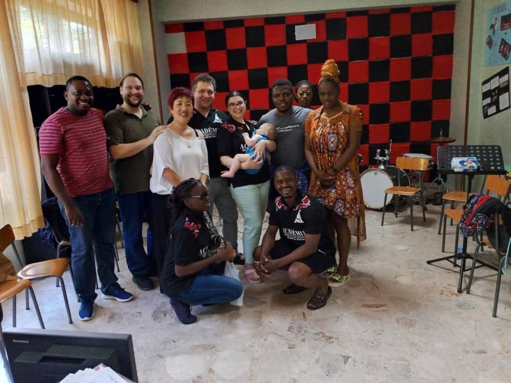

Un approccio didattico fondato sull'esperienza diretta nei teatri lirici internazionali, con attenzione allo stile, al repertorio e alla preparazione concreta alla professione musicale.
Discipline insegnate
Tecnica vocale, impostazione, emissione, fraseggio e stile nel repertorio lirico. Dalla voce parlata alla voce cantata.
Dalla gestualità direttoriale alla costruzione del suono corale. Per direttori di coro amatoriali e professionali.
Presenza scenica, movimento e costruzione del personaggio operistico. Basato sull'esperienza nei maggiori teatri d'opera.
Preparazione musicale, accompagnamento e coaching per cantanti solisti e gruppi vocali in ambito lirico e musical.
Esperienze di insegnamento

Docente di Musica — Scuola Primaria
Istituto Comprensivo Mater Carmeli · Roma
Docente di Canto e Canto Polifonico
Accademia del Teatro Il Sistina · Roma
Docente di Canto
International MusicAll Production · Cascina (PI)
Presidente Onorario: Luca Ward
Docente di Canto
International OperaStudio · Formello (Roma)
Formazione Accademica
Conservatorio S. Cecilia · Roma
Diploma in Canto Lirico — Basso
Con il M° Carlo Desideri
Spec.: M° Gianni Bavaglio (canto) · M° Pietro Spagnoli (arte scenica)
Conservatorio S. Cecilia · Roma
Biennio Specialistico — Direzione d'Orchestra di musica vocale e sacra
Docente: M° Maurizio Ciampi
Laurea con lode e menzione d'onore · Luglio 2025
Tesi: Cavalleria Rusticana — P. Mascagni
Santuzza: Corney Mills · Turiddu: Fabio Serani
Alfio: Massimo Simeone · Lola: Michela Varvaro
POLISA · Vibo Valentia
Laurea Magistrale — Musica, Scienza e Tecnologia del Suono
cum laude
LUMSA · Roma
Laurea Triennale — Scienze della Comunicazione
Economia e organizzazione dello spettacolo
Università E-Campus
Master I livello — Didattica e inclusione scolastica (BES)
ECM01
Cons. G. Tartini · Trieste / ACLI Roma
Direzione di Coro
M° Marco Feruglio · Padre Giuseppe Midilli
Patrocinio: Pontificium Consilium de Cultura del Vaticano
TikTok
Un canale dedicato alla tecnica vocale e al canto: pillole pratiche, esercizi e riflessioni per chi vuole migliorare la propria voce, cantata e parlata.
Segui @carloalbertogiojaPer informazioni su lezioni individuali, masterclass o workshop scrivi direttamente.
Contatta Carlo Alberto →